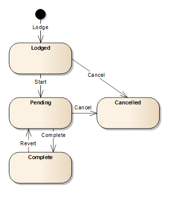

Service Lifecycle
Like applications, services can also exist in different states which they transition to
via service actions. The actions you can apply to a service are:
- Lodge – This action is triggered when you save a new service for the first time.
The Lodge action causes the service to be assigned the Lodged state.
- Start – To start processing the service, use the Start tool on the Application
Details Service tab toolbar. The Start action transitions the service into the Pending state.
The Start tool is available when the application is assigned and one of the services in the
Services list is selected.
- Cancel – If a service is no longer required or is inappropriate for the application,
the service can be cancelled using the Cancel tool on the Application Details Service tab
toolbar. The Cancel action transitions the service into the Cancelled state. Note that all
services must be in a state of Cancelled or Completed before the application can be approved.
The Cancel tool is available when the application is assigned and one of the services in
the Services list is selected.
- Complete – To complete processing of the service, use the Complete tool on the
Application Details Service tab toolbar. The Complete action executes business rules for
the service and transitions it into the Complete state if the rule checks are successful.
Note that all services must be in a state of Cancelled or Completed before the application
can be approved. The Complete tool is available when the application is assigned and one
of the services in the Services list is selected.
- Revert – During quality review or approval, if the user determines a service requires
further attention, they can reset the status of the service using the Revert tool on the
Application Details Service tab toolbar. The Revert action transitions the service back
to the Pending state for further processing. The Revert tool is available when the
application is assigned and the selected service has a Completed status.
The following state transition diagram illustrates the Service Lifecycle and the effect
different actions have on service state.

Also See